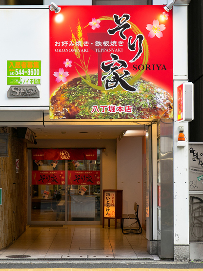
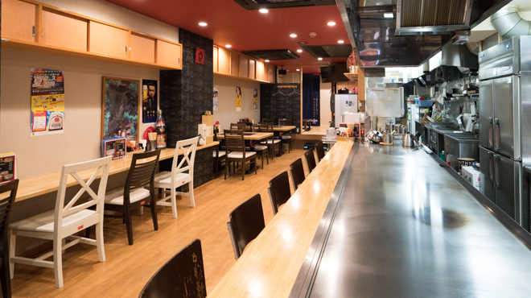
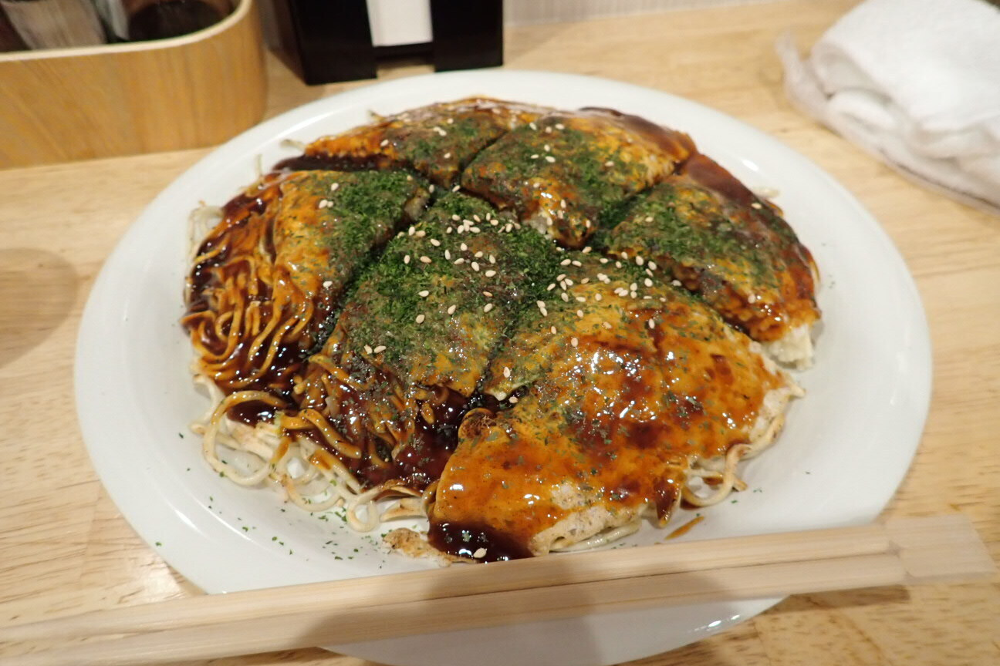

[広島 八丁堀]
お好み焼き・鉄板焼き そり家

おすすめのポイント
広島電鉄八丁堀電停から、歩いて３分ほどのところにあるお店です。
このお店は、私が広島へ一人旅した時に入ったお店です。
席は、カウンターとテーブルがありますが、半々くらいのイメージです。
店内が広々としているので、隣の人との距離も近くなく、ゆっくりと食事できます。

お好み焼きがとても美味しかったのと、店員さんが気さくでとても心地よかったです。
また、広島に行った時には是非立ち寄りたいお店です。

お店の情報
| 店名 | お好み焼き・鉄板焼き そり家 |
|---|---|
| 住所 | 広島県広島市中区八丁堀13-17 ソラリスビル 1F |
| アクセス | 広島電鉄八丁堀電停から徒歩3分
八丁堀駅から151m |
| 電話 | 050-5597-7007 |
| 営業時間 | ランチ
11:30～14:30（L.O.14:00） ディナー 17:30～23:00（フードL.O.22:00 ドリンクL.O.22:30） [金・土] 11:30～14:30（L.O.14:00） 17:30～24:00（フードL.O.23:00 ドリンクL.O.23:30） |
| 定休日 | 日曜日
|
| 予算 |
ランチ 〜999円
ディナー 3000〜3999円 |
| HP |
https://soriyaokonomiyaki.wordpress.com/%e 3%81%8a%ebr5%95%8f%e3%81%84%e5% 90%88%e3%82%8f%e3%81%9b/ |